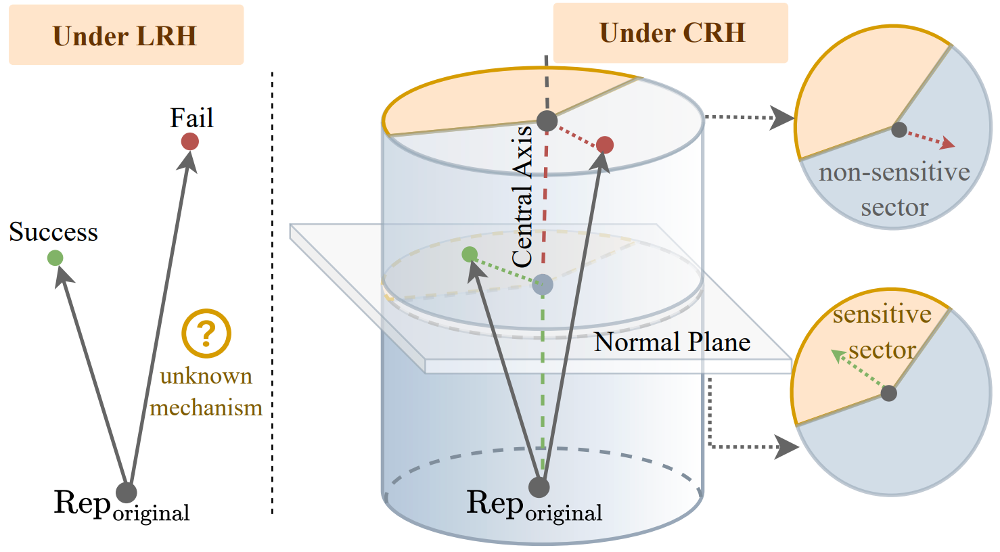

The Cylindrical Representation Hypothesis for Language Model Steering

Lang Gao, Jinghui Zhang, Wei Liu, Fengxian Ji, Chenxi Wang, Zirui Song, Akash Ghosh, Youssef Mohamed, Preslav Nakov, and Xiuying Chen
"By relaxing the orthogonality assumption in the Linear Representation Hypothesis, we introduce a cylindrical structure that explains why steering directions often interact and lead to unstable behaviors."